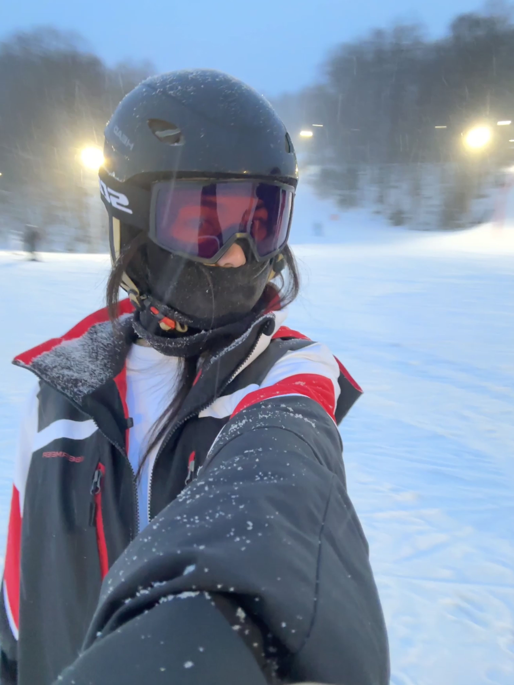

Traveling is one of my favorite hobbies because it allows me to explore new places and experience different cultures around the world. I enjoy learning about how people live in different cities, trying local food, and seeing unique landscapes that are completely different from my everyday environment. Traveling helps me step outside of my routine and become more open-minded about different lifestyles and perspectives. Recently, I had the opportunity to visit Italy in December. During the trip, I traveled through several cities and experienced very different atmospheres between the northern and southern parts of the country. Cities such as Milan and Florence felt elegant and artistic, with historic architecture and famous cultural landmarks. In contrast, southern cities like Naples and Sicily felt more vibrant and relaxed, with lively streets, local markets, and beautiful coastal views. Seeing these regional differences made the trip especially memorable and helped me appreciate how diverse one country can be.
Another hobby that I truly enjoy is snowboarding. Snowboarding combines excitement, challenge, and the beauty of nature. I love the feeling of standing on top of a mountain and riding down through fresh snow while surrounded by incredible scenery. Winter in Boston can be very cold, but it also provides great opportunities to visit nearby mountains and enjoy the snow season. Snowboarding also teaches patience and perseverance. Learning new techniques takes time, and falling is part of the process. However, every time I practice, I gain more confidence and improve my balance and control. For me, snowboarding is not only a sport but also a way to relax, stay active, and appreciate the natural environment. In the future, I would also like to explore other outdoor activities such as surfing, climbing, and golf. Trying new sports and experiences is something that motivates me to keep exploring the world and challenging myself in different ways.
What I Enjoy Most
- Exploring new cities and countries
- Seeing beautiful landscapes
- Trying local food during trips
- Learning different cultures
- Learning and improving snowboarding skills
- Spending time outdoors and staying active
